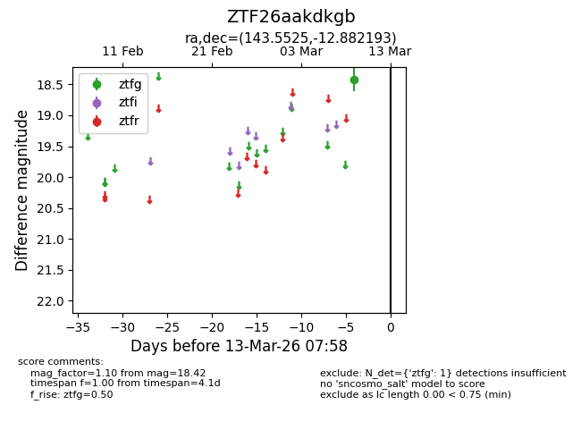
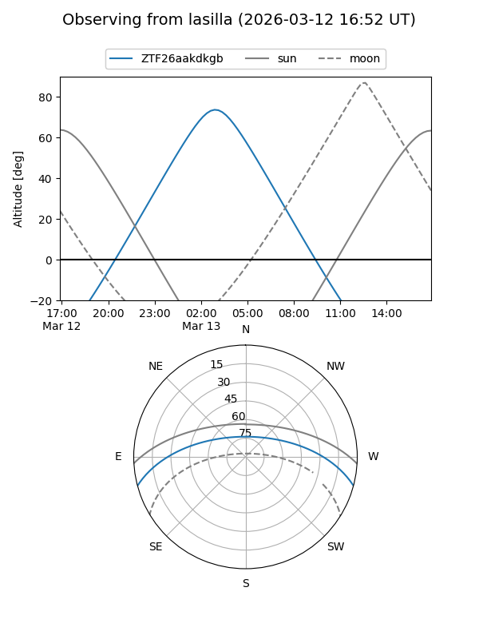
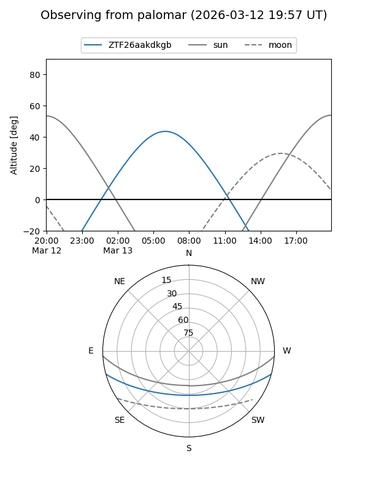

ZTF26aakdkgb
Target ZTF26aakdkgb at 2026-03-13 07:59
Aliases and brokers:
FINK: link
Lasair: link
ALeRCE: link
alt names
ZTF26aakdkgb (ztf,fink_ztf)
Coordinates:
equatorial (ra, dec) = 143.5525,-12.88219
equatorial (HMS+DMS) = 09:34:12.61,-12:52:55.89
galactic (l, b) = (246.3792,+27.64633)
Flags:
Photometry:
last ztfg=18.42
1 ztfg detections
Lightcurve

Visibility


Additional plots